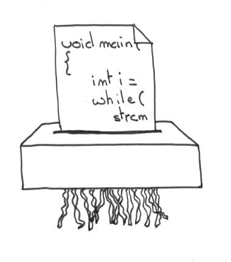

Here is the main feedback I got about my previous post eXtreme eXtreme Programming.
What do you actually mean by throwing code away ? Does it mean stoping unit testing and refactoring ?

So I guess it deserves a bit of explanation.
What is it all about ?
When programming, I don’t throw code away a lot. I tend to rely on my automated tests to change the code I already have. That might be a problem.
As with everything, there is no one size fits all. We should choose the best practice for our current situation. Same thing applies for incremental changes versus rewriting.
TDD makes incremental changes cost effective, and as such, is a key to get out of the Waterfall.
The idea of throwing code away frequently is to make rewriting cost effective, so we can do it more often.
Why would we want to do so ?
In “When Understanding means Rewriting”, Jeff Atwood explains that reading code can be more difficult than writing it. There is a point where rewriting is going to be cheaper than changing.
The more unit test you have, the later you reach that point. The more technical debt you take, and the sooner. The bigger the part to rewrite, the more risky it becomes.
Let’s imagine you knew a safe way to rewrite the module you are working on. You could be faster by taking more technical debt and writing less unit tests ! Mike Cavaliere framed it as
F**k Going Green: Throw Away Your Code.
This would be great for new features, that might be removed if they don’t bring any value. It would also be a good way to get rid of technical debt. Naresh Jain also makes the point that without tests, you’ll have to keep things simple (here and here) !
Wait a minute, isn’t that cowboy coding ?
How to make it work
How to ensure quality without unit tests ?
TDD and unit testing is a cornerstone of XP. If we remove it, we need something else to build quality in. Could Mob Programming and Remote teams do the trick ?
“Given enough eyeballs, all bugs are shallow”. Pair programming and code reviews catch a lot more bugs than solo programming. Only a few bugs are likely to pass through the scrutiny of the whole team doing mob programming.
What about Remote ? Martin Fowler explains that remote teams perform better by hiring the best. Skills of programmers have been known for a long time as a main driver of software quality.
Finally, the Cucumber team reported that Mob Programming works well for remote teams.
How to make this safer ?
Even with the best team, mistakes will happen. How can we avoid pushing a rewrite that crashes the whole system ?
The main answer to that is good continuous deployment. We should deploy to a subset of users first. We should be able to rollback straight away if things don’t work as expected.
As the system grows, microservices can keep continuous deployment under control. We can deploy, update and roll them back independently. By nature, microservices also reduce the scope of the rewrite. That alone, as we said earlier, makes rewrites safer.
As a last point, some technologies make building microservice systems easier and incremental. The Erlang VM, for example, with first class actors, is one these. Time to give Erlang and Elixir a try !
Is this always a good idea ?
There are good and bad situations.
For example, a lean startup or data driven environment seems a good fit. Suppose your team measures the adoption of new features before deciding to keep or ditch them. You’d better not invest in unit tests straight away.
On the other side, software for a complex domain will be very difficult to rewrite flawlessly. I have worked in the finance industry for some years, I know what a complex domain is. I doubt I could rewrite a piece of intricate finance logic without bugs. I would stick to DDD and unit testing in these areas.
How to dip your toe
Here is how I intend to dip my toe. I won’t drop automated testing completely yet. What I could do instead (and that I already did on side projects) is to start with end to end tests only.
From there every time I want to change a piece of code, I have many options :
- Add a new end to end test and change the code.
- If the code is too much of a mess, I can rewrite it from scratch. I’ll have the safety of the end to end tests.
- If I see that the module is stabilizing, has not been rewritten for a while, and yields well to modifications. I could start splitting end to end tests into unit tests, and embark on the TDD road.
Maybe later, when I have a team doing mob programming to find my mistakes, we’ll skip the end to end tests.
Other interesting links
- Throwaway Code by M. Scott Ford
- Rewrite Code From Scratch on c2 wiki